Bachelor of Civil Engineering (Hons) · The Maldives National University · 2019–2023
Engineering.
Structural design, analysis and field work from the civil engineering degree: a 14-storey building carried from site survey to raft foundation, a thesis testing its wind loads, and a coastal field study in K. Thulusdhoo.
“An engineering degree gave me the technical language for systems and structures. Architecture gave me the spatial one.” From the Design V portfolio profile
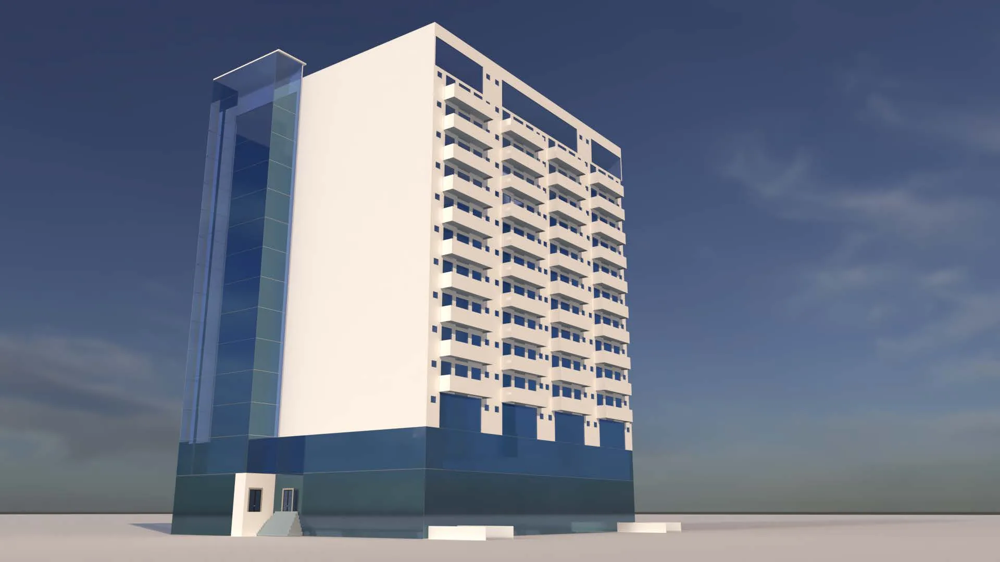
Engineering project · Capstone
Proposed 14-storey mixed-use building, Villimalé
The brief
The project is motivated by the upcoming completion of the Thilamalé Bridge, which will significantly increase traffic and population on the island, particularly driving demand for housing. Given Villimalé’s limited land area of 27 hectares, maximizing land utilization is crucial for sustainable urban development.
- 14 + BStoreys plus basement parking
- 72Two-bedroom apartments, 8 per floor
- 8Office spaces
- 4Two-storey commercial spaces
- Ground floor: entrances on all four sides, a central fountain and sitting area, commercial spaces around it.
- Floors 3–12: eight apartments per floor, each with two bedrooms, kitchen, sitting area and balcony.
- 13th floor: gym, changing rooms, storage and an events kitchen; cooling towers on the terrace.
- Green features: half the terrace as a garden, open corridors for natural ventilation and light, rooftop solar.
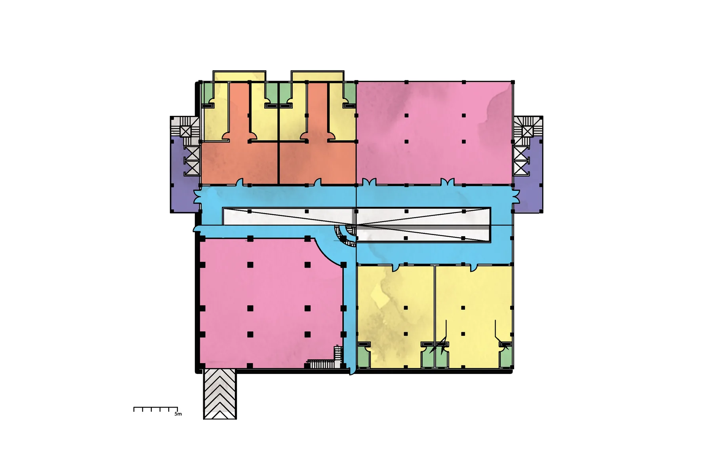
Site & topographic survey
The site is the vacant plot next to the Villimalé police station. A 35 m × 35 m grid was set out with points at 5 m intervals, using the pavement level as the benchmark. Readings were taken with a theodolite, with a level staff held stationary at each point while two observers read and recorded to minimise human error.
Elevations between points were interpolated into a continuous surface and contour lines generated from it, informing the foundation design.
- 35×35 mSurvey grid
- 5 mPoint spacing
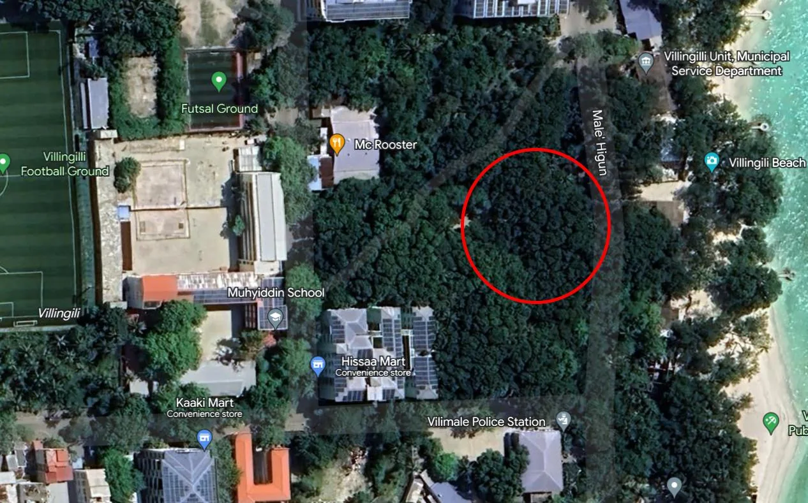
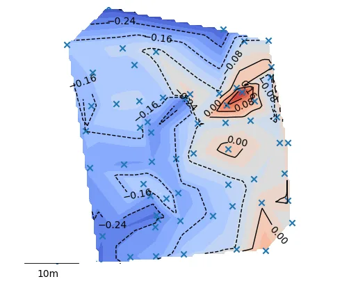
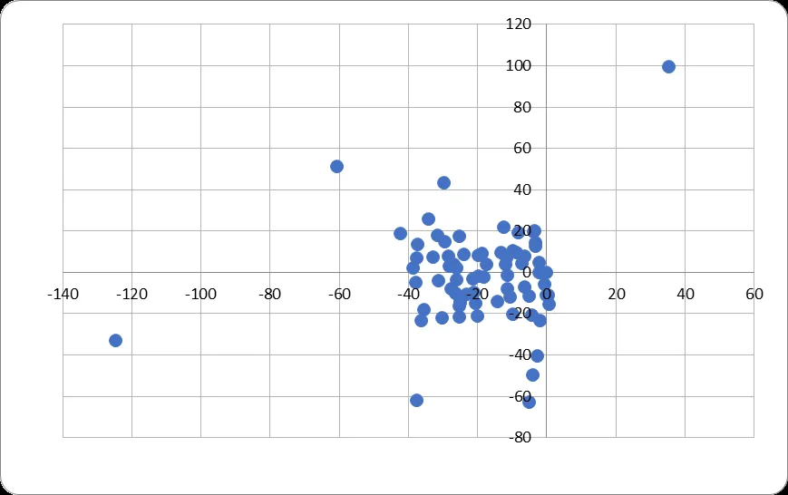
Appendix A · Drawing set · 18 sheets
Plans, elevations & sections
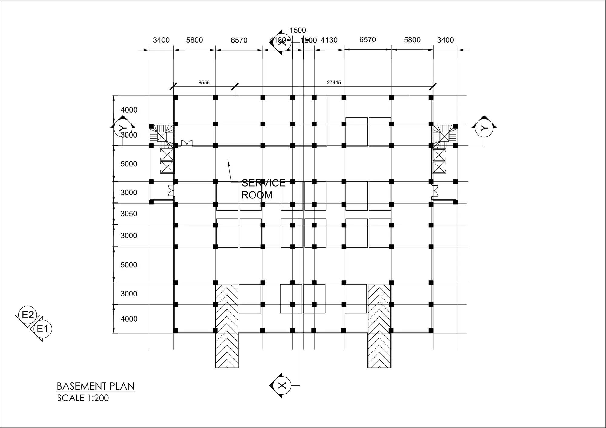
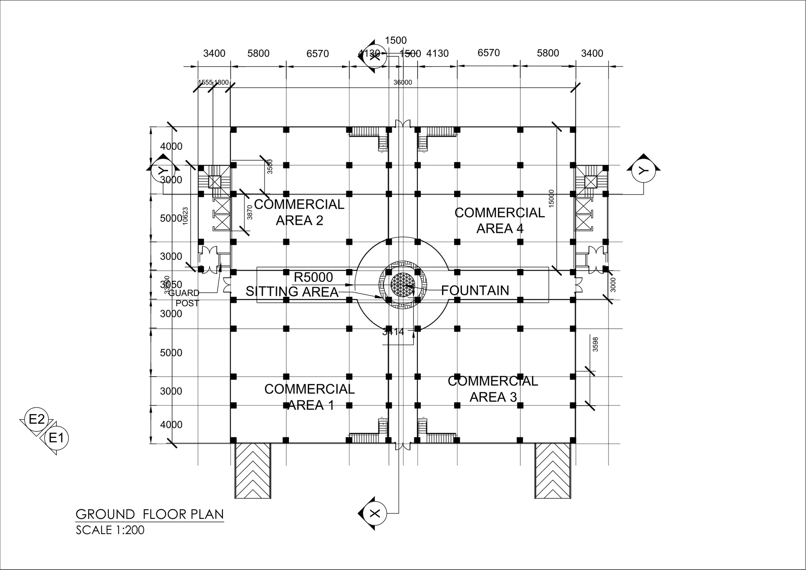
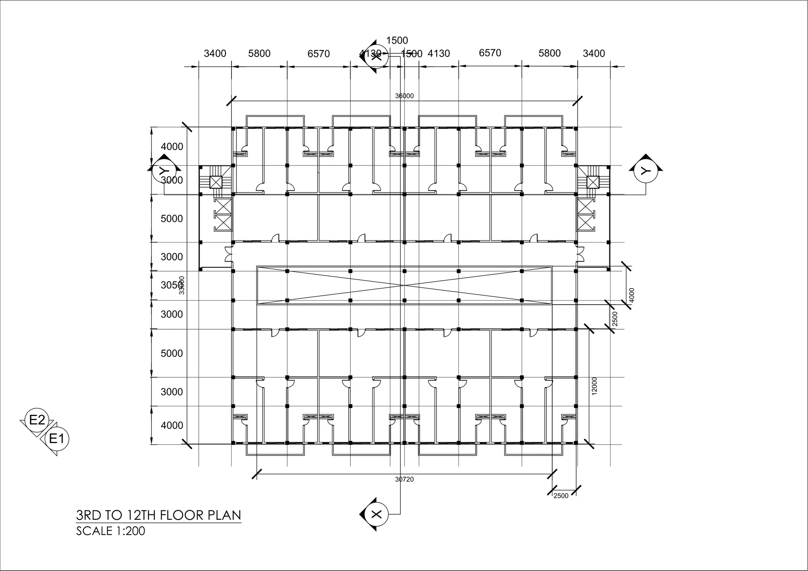
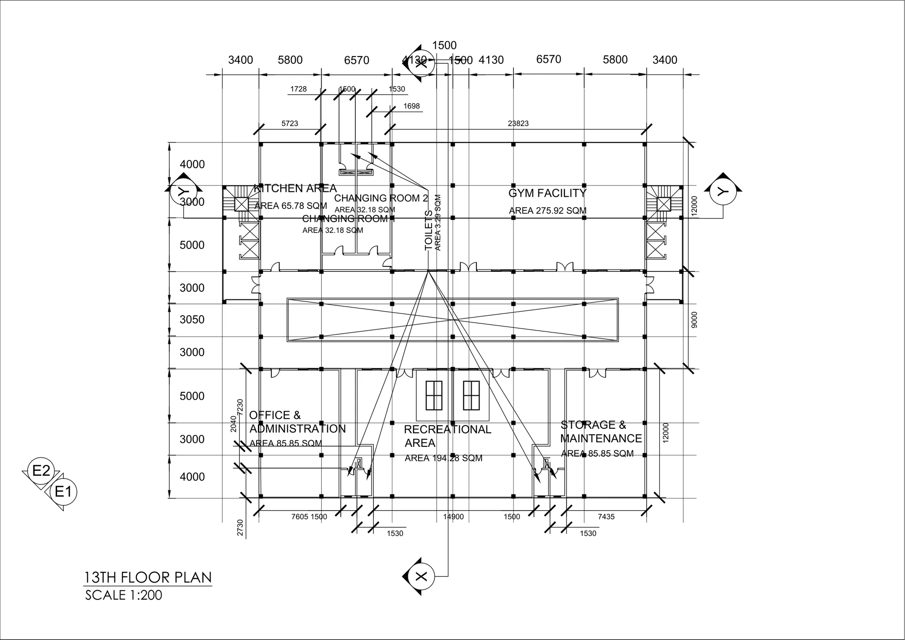
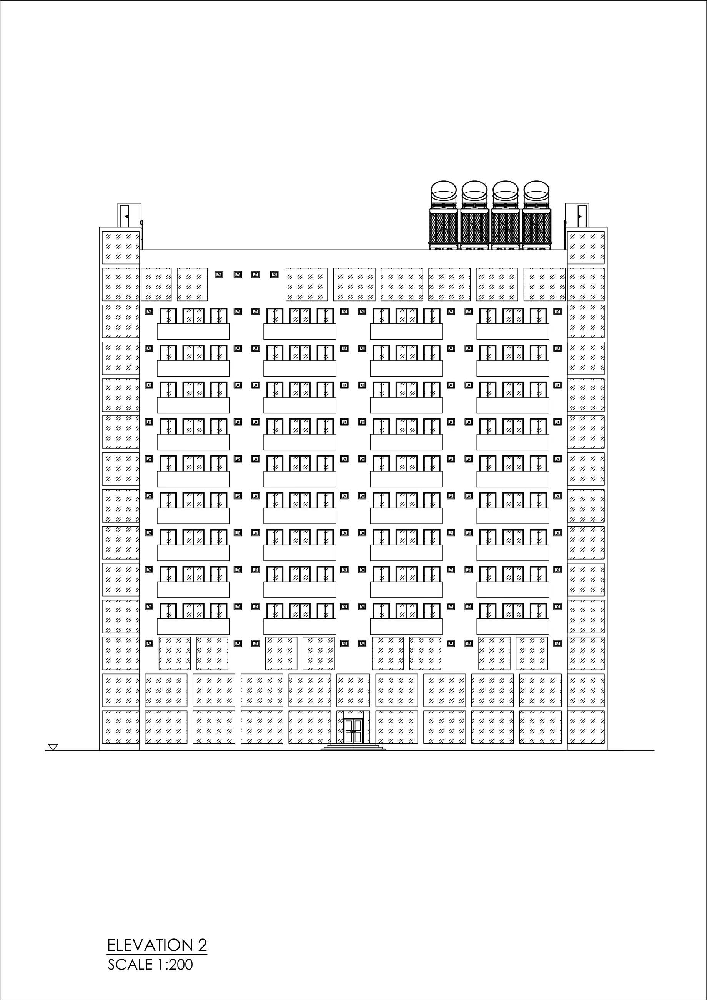
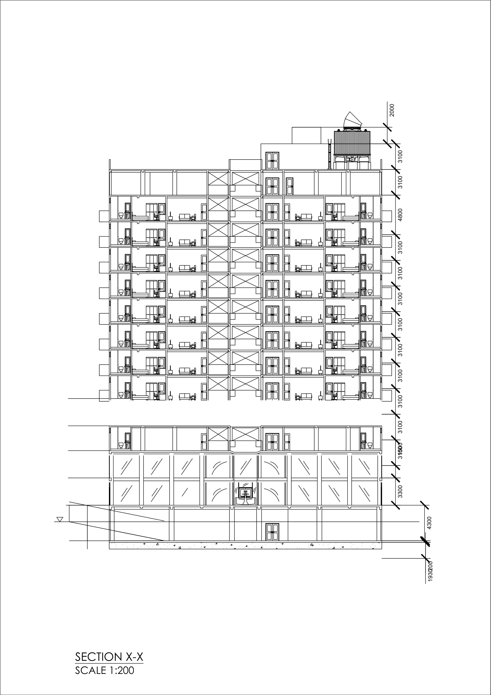
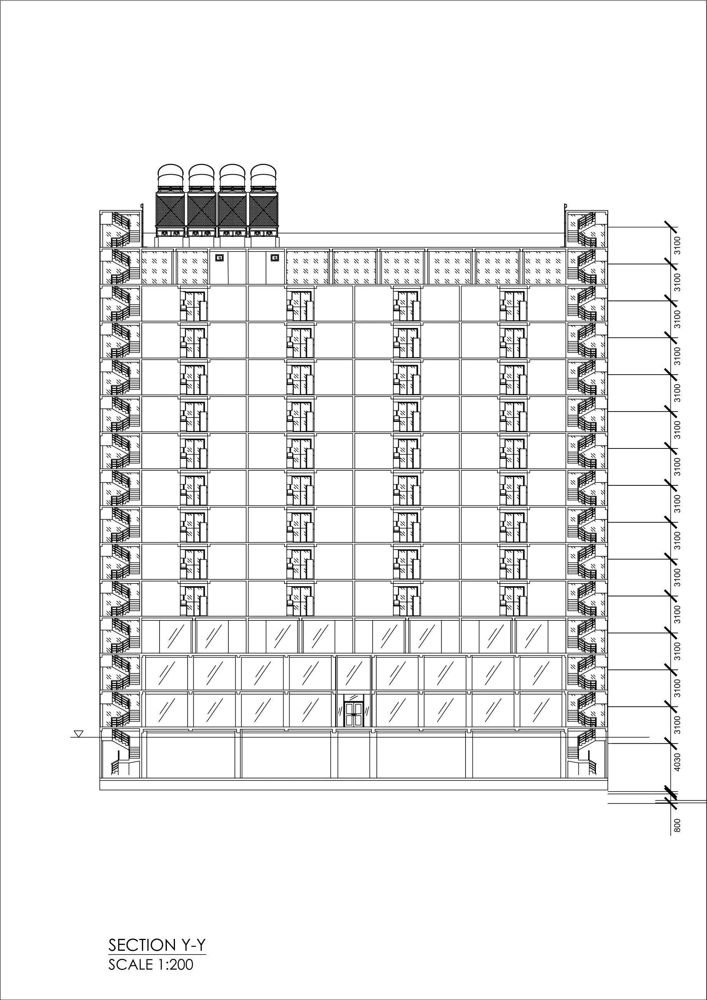
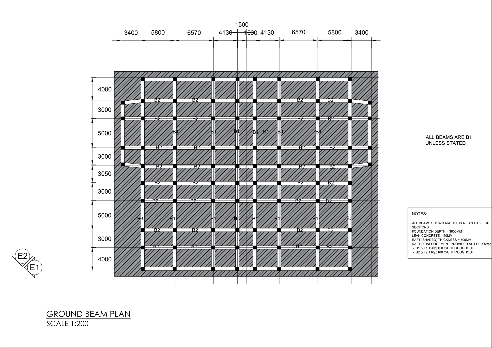
Design methodology · Calculations
Structural design, slab to raft
After the schematic design, the column layout was adjusted so that at least 60% of columns remain continuous. Slabs were designed first from floor-by-floor load distribution, then beams grouped by similar loading, then columns that reduce in size as they rise, trimming concrete and the load on the foundation. A raft foundation carries the whole building.
- 135 / 150Slab thickness (mm): residential / other floors
- 13Beam types; largest 500 × 350 mm
- 5Column types, stepping down with height
- 45×35 mRaft under a 36 × 33 m footprint
- 700 mmRaft slab; raft beams up to 1300 × 700 mm
- ≥ 60%Columns kept continuous
Codes: 1020-R/2019 Building Code · Malé urban area planning regulations · MNDF fire regulations
Beam B1 · extract
| Design load 1.4G + 1.6Q | 13.855 kN/m² |
| Tributary area | 17.70 m² |
| Total design load | 310.93 kN |
| Bending moment | 255.35 kNm |
| Shear | 155.46 kN |
| As required | 1617 mm² |
| Provided: 12 T16 | 2412 mm² |
| Links | 4L6 @ 150 c/c |
Raft slab · extract
| Total load (+10%) | 467,055 kN |
| Foundation area | 1,575 m² |
| Net upward pressure | 296.5 kN/m² |
| d required | 591 mm |
| Midspan & support | T20 @ 150 c/c |
| Distribution | T16 @ 180 c/c |
| Shear check | Vc > V, OK |
Utility distribution proposal
An appendix proposing how the building’s utilities could use its scale: where rates rise with consumption, a shared reservoir between provider and residents; where rates fall with volume, one bulk purchase distributed internally.
- Gas: one central tank outside the building instead of 96 individual cylinders, for space, bulk pricing and easier leak monitoring.
- Electricity & water: a reservoir model that bills residents by use rather than tiered provider rates, and doubles as backup during outages.
- Internet: the largest package bought as one entity and distributed through a switch, able to balance more than one provider.
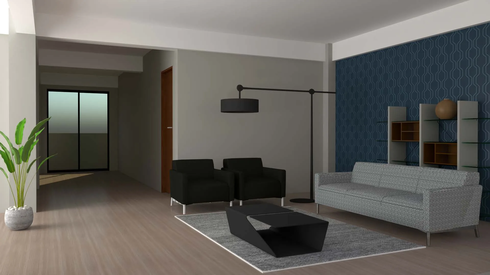
Appendices C & D
Cost estimate & schedule
- MVR 354.6MTotal building estimate (≈ US$23.0M)
- 1,750MVR per sq ft
- 13,509Sq ft footprint × 14 floors + basement
Largest cost items (MVR)
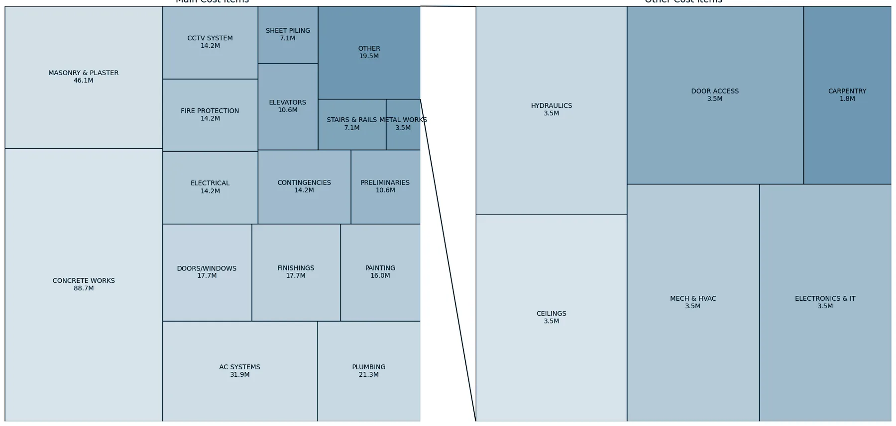
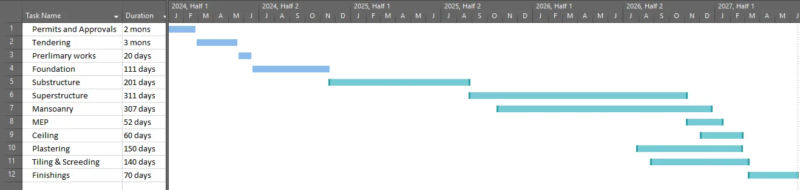
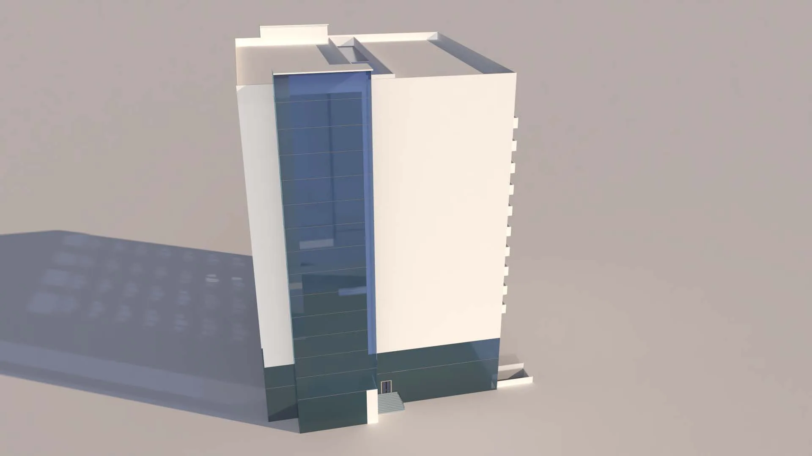
From the conclusion
As a mixed-use building, it offers various amenities within a single location, eliminating the need for car travel and promoting a more walkable community, particularly beneficial for Villimalé, already a car-free island.
Thesis · Bachelor of Civil Engineering (Hons)
An investigation into the wind load analysis of a 14-storey building
Question & method
Wind load is a critical part of tall-building design. The thesis compares an analytical method (hand calculation to Australian standards, AS 3600) with a numerical one (finite element analysis in STAAD.Pro) to see how much wind actually changes the structural design of the 14-storey building from the capstone.
- 45 m/sDesign wind speed, per the 2005 UN disaster-mitigation workshop
- 44 m/sHighest recorded gust in the Maldives, 10 April 1996
- 1980–2019Hulhulé station wind records analysed

Forty years of Hulhulé records were cleaned in Excel and processed in Python into a polar plot of average daily wind speed and direction. Despite the northeast monsoon, the wind sat closer to the southwest during certain periods.
- Minimal wind effect
The numerical analysis showed the impact of wind load on the structure is minimal compared to the other loads acting on it.
- Consistent member designs
Structural member designs showed little variation whether wind load was included or not.
- Implications for typical buildings
For structures of similar size and robustness, the impact of wind load may be negligible.
- The square-cube problem
As height increases, columns must grow sharply to carry the added dead load, a limit that may outweigh wind considerations.
Conclusion
“The results of this numerical analysis challenge the conventional wisdom regarding the necessity of explicitly incorporating wind load in the design of structures, especially for those sharing similar characteristics with the studied building.”
Coastal engineering project · 2023
Field study & breakwater design, K. Thulusdhoo
During a coastal engineering field trip to K. Thulusdhoo, I gained practical experience in environmental analysis and coastal protection design. The project involved surveying beach topography, creating a drone map of the island, and collecting and analysing soil samples.
I also observed the existing coastal structures, evaluating their effectiveness and impact. The work culminated in designing a breakwater, applying theory to a real site.
- Survey: beach profiles along the shoreline.
- Drone mapping: an orthomosaic of most of the island.
- Soil: sieve analysis of beach samples.
- Assessment: existing coastal structures.
- Design: a layered breakwater.

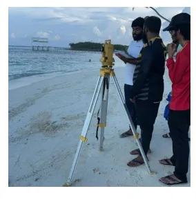
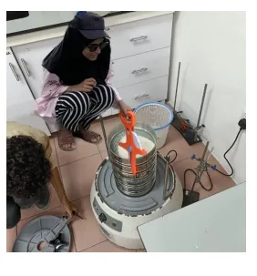
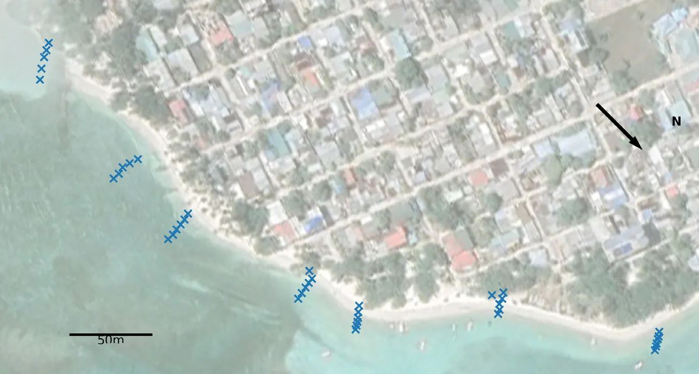
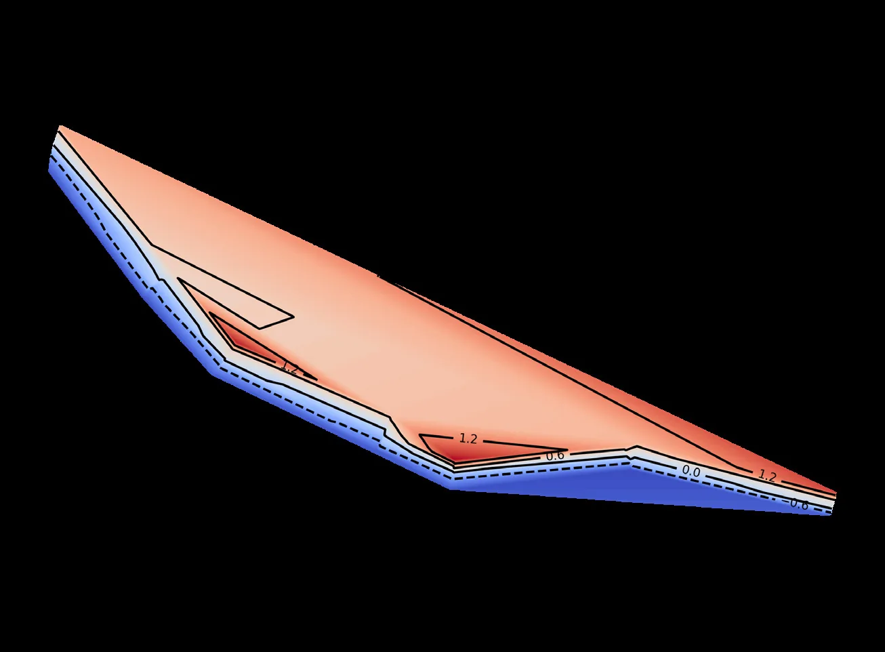
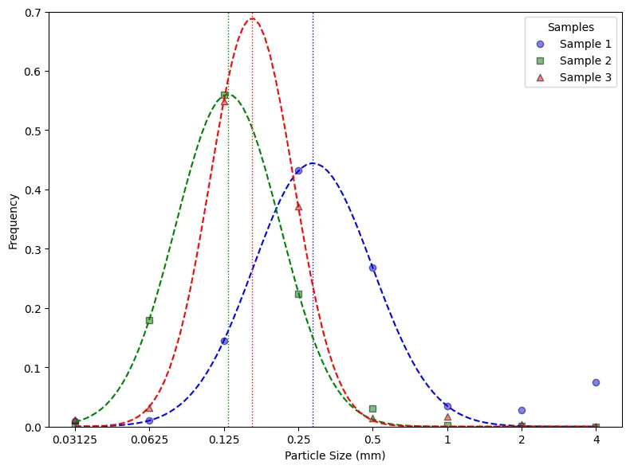
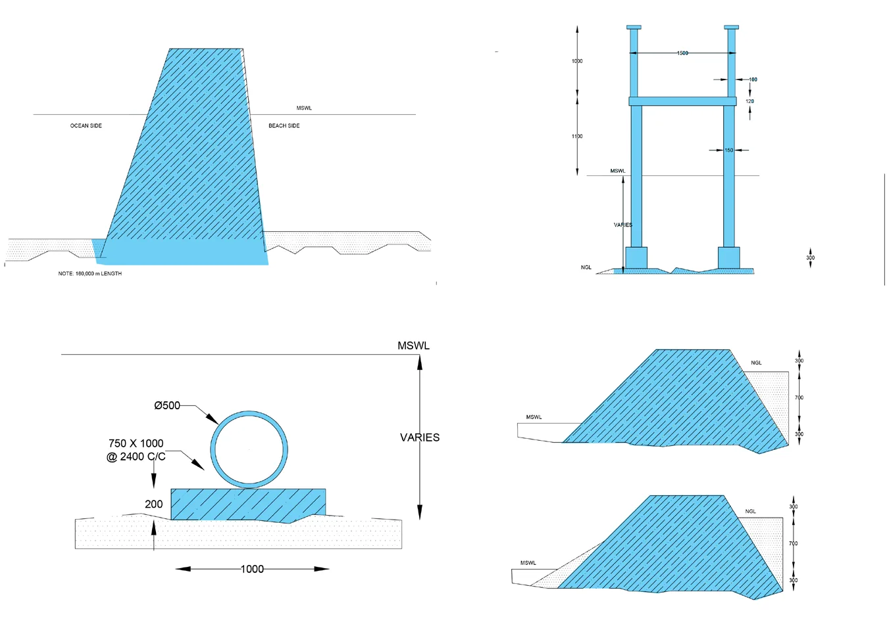
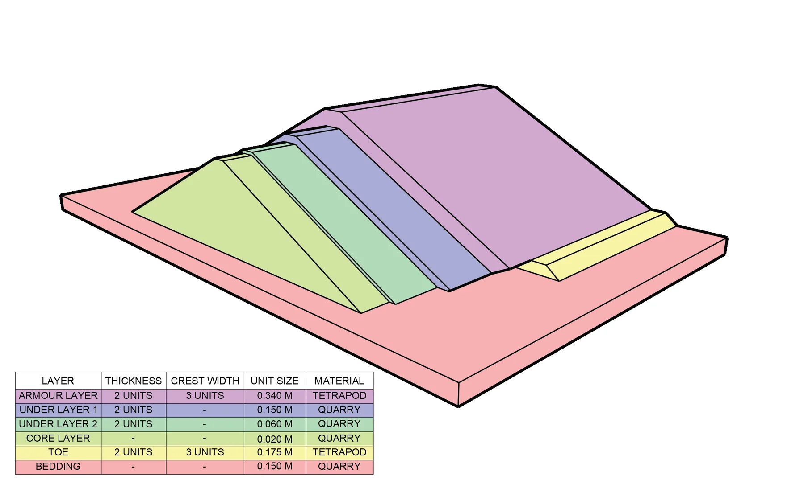